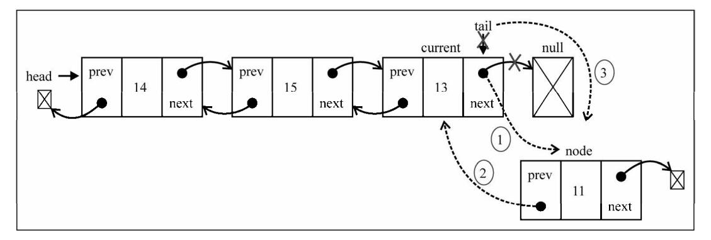
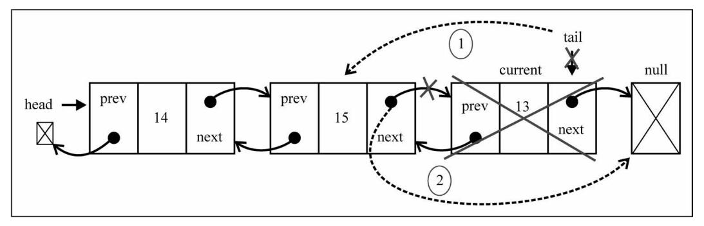
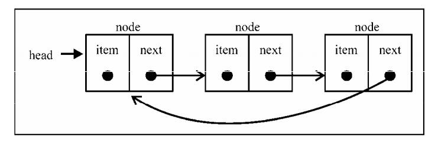

前面我们学习了常见的栈和队列两种数据结构，同时对数组这种数据结构有了更深的认识，在这篇文章中，我们将学习如何实现和使用链表以及集合两种数据结构。
要存储多个元素，数组（或列表）可能是最常用的数据结构。正如本书之前提到过的，每种语言都实现了数组。这种数据结构非常方便，提供了一个便利的[]语法来访问它的元素。然而，这种数据结构有一个缺点：（在大多数语言中）数组的大小是固定的，从数组的起点或中间插入或移除项的成本很高，因为需要移动元素（尽管我们已经学过的JavaScript的Array类方法可以帮我们做这些事，但背后的情况同样是这样）。
集合是由一组无序且唯一（即不能重复）的项组成的。这个数据结构使用了与有限集合相同的数学概念，但应用在计算机科学的数据结构中。
你也可以把集合想象成一个既没有重复元素，也没有顺序概念的数组。
链表
链表存储有序的元素集合，但不同于数组，链表中的元素在内存中并不是连续放置的。每个元素由一个存储元素本身的节点和一个指向下一个元素的引用（也称指针或链接）组成。
相对于传统的数组，链表的一个好处在于，添加或移除元素的时候不需要移动其他元素。然而，链表需要使用指针，因此实现链表时需要额外注意。数组的另一个细节是可以直接访问任何位置的任何元素，而要想访问链表中间的一个元素，需要从起点（表头）开始迭代列表直到找到所需的元素。
现实中也有一些链表的例子。第一个例子就是康加舞队。每个人是一个元素，手就是链向下一个人的指针。可以向队列中增加人——只需要找到想加入的点，断开连接，插入一个人，再重新连接起来。
另一个例子是寻宝游戏。你有一条线索，这条线索是指向寻找下一条线索的地点的指针。你顺着这条链接去下一个地点，得到另一条指向再下一处的线索。得到列表中间的线索的唯一办法，就是从起点（第一条线索）顺着列表寻找。
创建一个链表
理解了链表是什么之后，现在就要开始实现我们的数据结构了。以下是我们的LinkedList类的骨架：
function LinkedList() {
let Node = function(element) {
this.element = element;
this.next = null;
}
let length = 0;
let head = null;
// 方法
}
LinkedList数据结构还需要一个Node辅助类。Node类表示要加入列表的项。它包含一个element属性，即要添加到列表的值，以及一个next属性，即指向列表中下一个节点项的指针。
LinkedList类也有存储列表项的数量的length属性（内部/私有变量）。另一个重要的点是，我们还需要存储第一个节点的引用。为此，可以把这个引用存储在一个称为head的变量中。
然后就是LinkedList类的方法。在实现这些方法之前，先来看看它们的作用。
- append(element)：向列表尾部添加一个新的项。
- insert(position, element)：向列表的特定位置插入一个新的项。
- remove(element)：从列表中移除一项。
- indexOf(element)：返回元素在列表中的索引。如果列表中没有该元素则返回-1。
- removeAt(position)：从列表的特定位置移除一项。
- isEmpty()：如果链表中不包含任何元素，返回true，如果链表长度大于0则返回false。
- size()：返回链表包含的元素个数。与数组的length属性类似。
- toString()：由于列表项使用了Node类，就需要重写继承自JavaScript对象默认的toString方法，让其只输出元素的值。
向链表尾部追加元素
向LinkedList对象尾部添加一个元素时，可能有两种场景：列表为空，添加的是第一个元素，或者列表不为空，向其追加元素。
append方法实现如下：
this.append = function(element) {
let node = new Node(element);
let current = null;
if (!head) {
// 列表中第一个节点
head = node;
} else {
current = head;
// 循环列表，直到找到最后一项
while(current.next) {
current.next = current;
}
// 找到最后一项，将其next赋为node，建立链接
current.next = node;
}
// 更新链表长度
length++;
}
首先需要做的是把element作为值传入，创建node节点。
其次先来实现第一个场景，向空链表中添加一个元素，如果head元素为null（列表为空），就意味着在向列表添加第一个元素。因此要做的就是让head元素指向node元素。下一个node元素将会自动成为null。
tip：列表最后一个节点的下一个元素始终是null。
第二种场景，向不为空的链表中添加元素，要向列表的尾部添加一个元素，首先需要找到最后一个元素。记住，我们只有第一个元素的引用，因此需要循环访问列表，直到找到最后一项。为此，我们需要一个指向列表中当前项的变量（current）。循环访问列表时，当current.next元素为null时，我们就知道已经到达列表尾部了。然后要做的就是让当前（也就是最后一个）元素的next指针指向想要添加到列表的节点。
最后，我们在更新链表长度，length++。
从链表中移除元素
现在，让我们看看如何从LinkedList对象中移除元素。移除元素也有两种场景：第一种是移除第一个元素，第二种是移除第一个以外的任一元素。我们要实现两种remove方法：第一种是从特定位置移除一个元素，第二种是根据元素的值移除元素（稍后我们会展示第二种remove方法）。
removeAt方法实现如下：
this.removeAt = function(position) {
// 保证位置在链表内
if (position >= 0 && position < length) {
let current = head;
let previous = null;
let index = 0;
// 移除第一项
if (position === 0) {
head = current.next;
} else {
while(index < position) {
previous = current;
current = current.next;
index++;
}
// 将previous与current的下一项链接起来：跳过current，从而移除它
previous.next = current.next;
}
length--;
return current.element;
} else {
return null;
}
}
我们要从列表中移除第一个元素，要做的就是让head指向列表的第二个元素。我们将用current变量创建一个对列表中第一个元素的引用。这样current变量就是对列表中第一个元素的引用。如果把head赋为current.next，就会移除第一个元素。
现在，假设我们要移除列表的最后一项或者中间某一项。为此，需要依靠一个细节来迭代列表，直到到达目标位置：current变量总是为对所循环列表的当前元素的引用。我们还要一个对当前元素的前一个元素的引用；它被命名为previous。因此，要从列表中移除当前元素，要做的就是将previous.next和current.next链接起来。这样，当前元素就会被丢弃在计算机内存中，等着被垃圾回收器清除。
对于最后一个元素，当我们在行跳出循环时，current变量将是对列表中最后一个元素的引用（要移除的元素）。current.next的值将是null（因为它是最后一个元素）。由于还保留了对previous元素的引用（当前元素的前一个元素），previous.next就指向了current。那么要移除current，要做的就是把previous.next的值改变为current.next。
对于列表中间的元素，current变量是对要移除元素的引用。previous变量是对要移除元素的前一个元素的引用。那么要移除current元素，需要做的就是将previous.next与current.next链接起来。
在任意位置插入一个元素
接下来，我们要实现insert方法。使用这个方法可以在任意位置插入一个元素。
insert方法实现如下：
this.insert = function(element, position) {
if (position >= 0 && position < length) {
let node = new Node(element);
let current = head;
let previous = null;
let index = 0;
if (position === 0) {
node.next = current;
head = node;
} else {
while(index < position) {
previous = current;
current = current.next;
index++;
}
node.next = current;
previous.next = node;
}
length++;
return true;
} else {
return false;
}
}
向列表中插入元素也有两种场景，第一种场景，需要在列表的起点，也就是第一个位置添加一个元素。
current变量是对列表中第一个元素的引用。我们需要做的是把node.next的值设为current（列表中第一个元素）。现在head和node.next都指向了current。接下来要做的就是把head的引用改为node，这样列表中就有了一个新元素。
第二种场景：在列表中间或尾部添加一个元素。首先，我们需要循环遍历列表，找到目标插入位置。当跳出循环时，current变量将是对想要插入新元素的位置之后的一个元素的引用，而previous将是对想要插入新元素的位置之前一个元素的引用。在这种情况下，我们要在previous和current之间添加新项。因此，首先需要把新项（node）和当前项链接起来，然后需要改变previous和current之间的链接。我们还需要让previous.next指向node。
查找元素在链表中的位置
indexOf方法接收一个元素的值，如果在列表中找到它，就返回元素的位置，否则返回-1。
indexOf方法实现：
this.indexOf = function(element) {
let current = head;
let index = 0;
while(current) {
if (current.element === element) {
return index;
}
index++;
current = current.next;
}
return -1;
}
一如既往，我们需要一个变量来帮助我们循环访问列表，这个变量是current，它的初始值是head（列表的第一个元素——我们还需要一个index变量来计算位置数。然后循环访问元素，检查当前元素是否是我们要找的。如果是，就返回它的位置；如果不是，就继续计数，检查列表中下一个节点。
如果列表为空，或是到达列表的尾部（current = current.next将是null），循环就不会执行。如果没有找到值，就返回-1。
实现其他方法
1. remove方法
前面我们实现了removeAt方法，该方法是根据元素位置删除链表中的元素，但如果我们使用上面刚实现的indexOf方法，我们可以实现根据元素来删除链表元素。
remove方法实现如下：
this.remove = function(element) {
const index = this.indexOf(element);
return this.removeAt(index);
}
传入元素的值，就能找到它的位置，然后调用removeAt方法并传入找到的位置。
2. toString方法
this.toString = function() {
let current = head;
let string = '';
while(current) {
string += ' ' + current.element;
current = current.next;
}
return string.trim().split(' ');
}
3. isEmpty方法
this.isEmpty = function() {
return length === 0;
}
4. size方法
this.size = function() {
return length;
}
5. getHead方法
this.getHead = function() {
return head;
}
head变量是LinkedList类的私有变量（这意味着它不能在LinkedList实例外部被访问和更改，只有通过LinkedList实例才可以）。但是，如果我们需要在类的实现外部循环访问列表，就需要提供一种获取类的第一个元素的方法。
双向链表
双向链表和普通链表的区别在于，在普通链表中，一个节点只有链向下一节点的链接，而在双向链表中，链表是双向的，一个链向下一节点，另一个链向前一个节点。
下面是实现双向链表类的骨架：
function DoubleLinkedList() {
let Node = function(element) {
this.element = element;
this.prev = null;
this.next = null;
}
let length = 0;
let head = null;
let tail = null;
}
双向链表提供了两种迭代列表的方法：从头到尾，或者反过来。我们也可以访问一个特定节点的下一个或前一个元素。在单向链表中，如果迭代列表时错过了要找的元素，就需要回到列表起点，重新开始迭代。这是双向链表的一个优点。
向链表尾部追加元素
向DoubleLinkedList对象尾部添加一个元素时，同样可能有两种场景：列表为空，添加的是第一个元素，或者列表不为空，向其追加元素。
append方法实现如下：
this.appned = function(element) {
let node = new Node(element);
let current = head;
if (!head) {
head = node;
tail = node;
} else {
current = tail;
current.next = node;
node.prev = current;
tail = node;
}
length++;
}
在任意位置插入一个新元素
向双向链表中插入一个新项跟（单向）链表非常类似。区别在于，链表只要控制一个next指针，而双向链表则要同时控制next和prev（previous，前一个）这两个指针。
insert方式实现如下：
this.insert = function(position, element) {
if (position >= 0 && position <= length) {
let node = new Node(element);
let current = head;
let previous = null;
let index = 0;
if (position === 0) {
if (!head) {
head = node;
tail = node;
} else {
node.next = current;
current.prev = node;
head = node;
}
} else if (positon === length) {
current = tail;
node.prev = current;
current.next = node;
tail = node;
} else {
while(index < position) {
previous = current;
current = current.next;
index++;
}
node.next = current;
previous.next = node;
current.prev = node;
node.prev = previous;
}
length++;
return true;
} else {
return false;
}
}
在列表的第一个位置（列表的起点）插入一个新元素。如果列表为空，只需要把head和tail都指向这个新节点。如果列表不为空，current变量将是对列表中第一个元素的引用，把node.next指向current，head指向node，同时，将cuurent元素的prev指向新元素，即current.prev指向node。
在列表的最后一项添加元素，与上面append的方法实现有相同之处，current变量将引用最后一个元素。然后开始建立第一个链接：node.prev将引用current。current.next指针将指向node（由于构造函数，node.next已经指向了null）。然后只剩一件事了，就是更新tail，它将由指向current变为指向node。

在列表中间插入一个元素，迭代列表，直到到达要找的位置。我们将在current和previous元素之间插入新元素。首先，node.next将指向current，而previous.next将指向node，这样就不会丢失节点之间的链接。然后需要处理所有的链接：current.prev将指向node，而node.prev将指向previous。
从任意位置移除元素
从双向链表中移除元素跟链表非常类似。唯一的区别就是还需要设置前一个位置的指针。
removeAt方法实现如下：
this.removeAt = function(position) {
if (position > 0 && positon < length) {
let current = head;
let previous = null;
let index = 0;
if (position === 0) {
head = current.next;
if (length === 1) {
tail = null;
} else {
head.prev = null;
}
} else if (position === length - 1) {
current = tail;
tail = current.prev;
tail.next = null;
} else {
while(index < posiiton) {
previous = current;
current = current.next;
index++;
}
previous.next = current.next;
current.next.prev = previous;
}
length--;
return current.element;
} else {
return null;
}
}
移除第一个元素，current变量是对列表中第一个元素的引用，也就是我们想移除的元素。需要做的就是改变 head 的引用，将其从 current 改为
current.next。但我们还需要更新current.next指向上一个元素的指针（因为第一个元素的prev指针是null）。因此，把head.prev的引用改为null（因为head也指向列表中新的第一个元素，或者也可以用current.next.prev）。由于还需要控制tail的引用，我们可以检查要移除的元素是否是第一个元素，如果是，只需要把tail也设为null。
从最后一个位置移除元素。既然已经有了对最后一个元素的引用（tail），我们就不需要为找到它而迭代列表。这样我们也就可以把tail的引用赋给current变量。接下来，需要把tail的引用更新为列表中倒数第二个元素（current.prev，或者tail.prev也可以）。既然tail指向了倒数第二个元素，我们就只需要把next指针更新为null（tail.next = null）。

从列表中间移除一个元素。首先需要迭代列表，直到到达要找的位置。current变量所引用的就是要移除的元素。那么要移除它，我们可以通过更新previous.next和current.next.prev的引用，在列表中跳过它。因此，previous.next将指向current.next，而current.next.prev将指向previous。
循环链表
循环链表可以像链表一样只有单向引用，也可以像双向链表一样有双向引用。循环链表和链表之间唯一的区别在于，最后一个元素指向下一个元素的指针（tail.next）不是引用null，而是指向第一个元素（head）。

双向循环链表有指向head元素的tail.next，和指向tail元素的head.prev。
集合
在深入学习集合的计算机科学实现之前，我们先看看它的数学概念。在数学中，集合是一组不同的对象（的集）。
比如说，一个由大于或等于0的整数组成的自然数集合：N = {0, 1, 2, 3, 4, 5, 6, …}。集合中的对象列表用“{}”（大括号）包围。
还有一个概念叫空集。空集就是不包含任何元素的集合。比如24和29之间的素数集合。由于24和29之间没有素数（除了1和自身，没有其他正因数的大于1的自然数），这个集合就是空集。空集用“{ }”表示。
你也可以把集合想象成一个既没有重复元素，也没有顺序概念的数组。在数学中，集合也有并集、交集、差集等基本操作。
创建一个集合
其实在在目前的ES6中，已经实现了Set类，在这一章中，我们要实现的类就是以ECMAScript 6中Set类的实现为基础的。
Set类的骨架：
function Set() {
var items = {};
}
接下来，需要声明一些集合可用的方法（我们会尝试模拟与ECMAScript 6实现相同的Set类）。
- add(value)：向集合添加一个新的项。
- remove(value)：从集合移除一个值。
- has(value)：如果值在集合中，返回true，否则返回false。
- clear()：移除集合中的所有项。
- size()：返回集合所包含元素的数量。
- values()：返回一个包含集合中所有值的数组。
has(value)方法
首先要实现的是has(value)方法。这是因为它会被add、remove等其他方法调用。
this.has = function(value) {
return items.hasOwnProperty(value);
}
add方法
this.add = function(value) {
if (!this.has(value)) {
items[value] = value;
return true;
}
return false;
}
对于给定的value，可以检查它是否存在于集合中。如果不存在，就把value添加到集合中，返回true，表示添加了这个值。如果集合中已经有这个值，就返回false，表示没有添加它。
remove方法
this.remove = function(value) {
if (this.has(value)) {
delete items[value];
return true;
}
return false;
}
在remove方法中，我们会验证给定的value是否存在于集合中。如果存在，就从集合中移除value，返回true，表示值被移除；否则返回false。
既然用对象来存储集合的items对象，就可以简单地使用delete操作符从items对象中移除属性。
clear方法
如果想移除集合中的所有值，可以用clear方法。
this.clear = function() {
items = {};
}
要重置items对象，需要做的只是把一个空对象重新赋值给它。
size方法
返回集合中有多少项。
this.size = function() {
let count = 0;
for( let prop in items) {
if (items.hasOwnProperty(prop)) {
count++;
}
}
return count;
}
当然，返回集合的长度我们可以使用JavaScript内建的Object类的一个内建函数。
this.size = function() {
return Object.keys(items).length;
}
JavaScript的Object类有一个keys方法，它返回一个包含给定对象所有属性的数组。在这种
情况下，可以使用这个数组的length属性来返回items对象的属性个数。
还有一种方法就是在定义集合是，使用一个length变量，每当使用add或remove方法时更新length变量。
values方法
提取items对象的所有属性，以数组的形式返回。
this.values = function() {
let keys = [];
for (let key in items) {
keys.push(key);
}
return keys;
}
遍历items对象的所有属性，把它们添加一个数组中，并返回这个数组。
如果不考虑兼容性问题，在现代浏览器中，我们可以这样实现：
this.values = function() {
return Object.keys(items);
}
使用Set类
let set = new Set();
set.add(1);
console.log(set.values()); // 输出["1"]
console.log(set.has(1)); // 输出true
console.log(set.size()); // 输出1
set.add(2);
console.log(set.values()); // 输出["1", "2"]
console.log(set.has(2)); // true
console.log(set.size()); // 2
set.remove(1);
console.log(set.values()); // 输出["2"]
set.remove(2);
console.log(set.values()); // 输出[]
集合操作
对集合可以进行如下操作：
- 并集：对于给定的两个集合，返回一个包含两个集合中所有元素的新集合。
- 交集：对于给定的两个集合，返回一个包含两个集合中共有元素的新集合。
- 差集：对于给定的两个集合，返回一个包含所有存在于第一个集合且不存在于第二个集合的元素的新集合。
- 子集：验证一个给定集合是否是另一集合的子集。
并集
并集的数学概念，集合A和B的并集，表示为A∪B，定义如下：
A∪B = { x | x ∈ A∨x ∈ B
意思是x（元素）存在于A中，或x存在于B中。
现在来实现Set类的union方法：
this.union = function(otherSet) {
let unionSet = new Set();
let values = this.values();
for (let i = 0; i < values.length; i++ ) {
unionSet.add(values[i]);
}
values = otherSet.values();
for (let i = 0; i<values.length; i++) {
unionSet.add(values[i]);
}
return unionSet;
}
首先需要创建一个新的集合，代表两个集合的并集。接下来，获取第一个集合（当前的Set类实例）所有的值（values），遍历并全部添加到代表并集的集合中。然后对第二个集合做同样的事，最后返回结果。
测试一下上面的代码：
let setA = new Set();
setA.add(1);
setA.add(2);
setA.add(3);
let setB = new Set();
setB.add(3);
setB.add(4);
setB.add(5);
setB.add(6);
let unionAB = setA.union(setB);
console.log(unionAB.values());
输出为[“1”, “2”, “3”, “4”, “5”, “6”]。注意元素3同时存在于A和B中，它在结果的
集合中只出现一次。
交集
交集的数学概念，集合A和B的交集，表示为A∩B，定义如下：
A∩B = { x | x ∈ A∧x ∈ B }
意思是x（元素）存在于A中，且x存在于B中。
现在来实现Set类的intersection方法：
this.intersection = function(otherSet) {
let intersectionSet = new Set();
let values = this.values();
for (let i = 0; i < values.length; i++) {
if (otherSet.has(values[i])) {
intersectionSet.add(values[i]);
}
}
return intersectionSet;
}
intersection方法需要找到当前Set实例中，所有也存在于给定Set实例中的元素。首先创建一个新的Set实例，这样就能用它返回共有的元素。接下来，遍历当前Set实例所有的值，验证它们是否也存在于otherSet实例。然后，如果这个值也存在于另一个Set实例中，就将其添加到创建的intersectionSet变量中，最后返回它。
我们用测试并集的代码做一些测试，最后输出为[“3”]。
差集
差集的数学概念，集合A和B的差集，表示为AB，定义如下：
AB = { x | x ∈ A ∧ x B }
意思是x（元素）存在于A中，且x不存在于B中。
现在来实现Set类的difference方法：
this.difference = function(otherSet) {
let differenceSet = new Set();
let values = this.values();
for (let i = 0; i < values.length; i++) {
if (!otherSet.has(values[i])) {
differenceSet.add(values[i]);
}
}
return differenceSet;
}
difference方法会得到所有存在于集合A但不存在于B的值。
我们用测试并集的代码做一些测试，最后输出为[“1”, “2”]。
子集
子集的数学概念，集合A是B的子集（或集合B包含了A），表示为A⊆B，定义如下：
∀x { x ∈ A → x ∈ B }
意思是集合A中的每一个x（元素），也需要存在于B中。
现在来实现Set类的subset方法：
this.subset = function(otherSet) {
if (this.size() > otherSet.size()) {
return false;
} else {
const values = this.values();
for (let i = 0; i < values.length; i++) {
if (!otherSet.has(values[i])) {
return false;
}
}
return true;
}
}
首先需要验证的是当前Set实例的大小。如果当前实例中的元素比otherSet实例更多，它就不是一个子集。子集的元素个数需要小于或等于要比较的集合。
接下来要遍历集合中的所有元素，验证这些元素也存在于otherSet中。如果有任何元素不存在于otherSet中，就意味着它不是一个子集，返回false。如果所有元素都存在于otherSet中，那么就返回true。
检验一下上面的代码效果如何：
let setA = new Set();
setA.add(1);
setA.add(2);
let setB = new Set();
setB.add(1);
setB.add(2);
setB.add(3);
let setC = new Set();
setC.add(2);
setC.add(3);
setC.add(4);
console.log(setA.subset(setB));
console.log(setA.subset(setC));
我们有三个集合：setA是setB的子集（因此输出为true），然而setA不是setC的子集（setC只包含了setA中的2，而不包含1），因此输出为false。